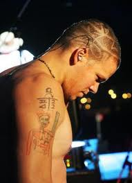
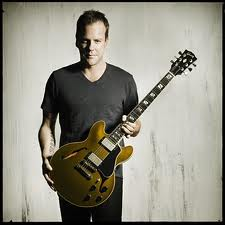
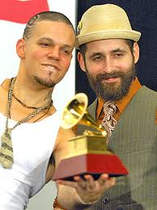
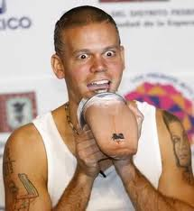
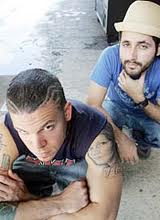
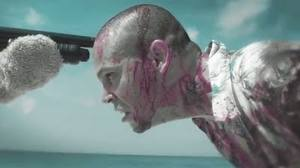

Calle 13
 De: La Frikipedia, la enciclopedia extremadamente seria.
De: La Frikipedia, la enciclopedia extremadamente seria.
De la serie Grupos musicales:
Si te diste cuenta, que sepas que no es lo más asqueroso que veras
| Origen
|
Cuando un rockero cogió con una reggaetonera ¿LOL?
|
| Tiempo
|
|
| Estilo
|
cumbia batucada ska Todos... Eso es un gran logro.
|
| Discográfica/s
|
Sony no.
|
| Miembros
|
Residente el pene órgano y Visitante guitarra tambores, flauta, tuberias, bateria, bajo y voz.
|
| Estado
|
Jodido
|
| Sitio web
|
ReggetonQueNoEsBasura.org
|
«Queremos perfecionar el mundo con marihuna y guerra... ¡Viva Cuba!»
~ Residente y Visitante en un día feliz de drogas, pajas y... ¿¡¿reggaetón?!?
«Esto es Feca, no es de verdad, son como la mayoría de los regaytoneros que son Feca, no son de verdad, ¿Esta bien?, ¡¡¡a fuego!!!»
~ Calle 13 al final de la canción Algo Con-Sentido hablando acerca de lo que verás en esta página
«Yo se que a tí te gusta el pop-rock latino, pero es que el reggaetón se te mete por los intestinos...»
~ Calle 13 Cantando un reguetón
«Esto no es reggaetón pero como quiera bailas un montón»
~ Calle 13 en una canción de rock latino que parece reggaetón WTF¡¡¡¡¡¡¡¡
«Es reggaetón»
~ un regaytonero al escuchar una canción de calle 13
«Oh no puede ser, no es reggaetón»
~ el mismo regaytonero escuchando otra canción de calle 13
«Claro que no es regetón (o como sea que se escriba)»
~ Un no regaytonero que no escucho la primera canción
«¡Oh por dios! ¡Mis oídos han sido brutalmente violados!»
~ El tío de arriba al escuchar la primera canción
«La de Residente será en Hawaii, la de Visitante no se sabe»
~ La Muerte sobre el destino de estos cantantes
«No se si su música es un crímen o una bendición»
~ Diox al ver algo que es su estilo es parecido al Regayton y que es mierdo ¿LOL?
Calle 13 es un grupo dúo dinamico conformado por un tal Residente y su puta medio hermano Visitante, su estilo es una mezcla de regaetón con otros ritmos o cumbia con otros ritmos o ¿rock con otros ritmos? WTF¡¡¡¡¡, bueno, en realidad no se sabe cual es su estilo, pero se sabe que varia mucho y usa instrumentos poco comunes.
Residente es una especie de rapero-regayttonero-pseudorockero, que además de cantar compone, se dice que es el que tuvo la idea de dominar el mundo con una mezcla de reggaetón con otros ritmos mientras estaba drogado y borrach, su hermano, en el mismo estado que él inmediatamente aceptó
Visitante es una especie de todólogo para la música, porque lo mismo compone que hace coros que toca cualquier instrumento y no precisamente músical.
En casi toda América gracias a que su musica le gusta tanto a nefermos mentales como a gente normal.
Biografía
Residente

|
Nací mirando para arriba el 23 de febrero después de estudiar tanto (un bachillerato y una maestría) termine siendo ratero rapero; mi familia es grande, en mi casa somos ocho ya la clase media baja no recibe plan ocho.
Es normal que mi comportamiento no les cuadre y más cuando el gobernador se folló desempleó a mi madre...
|

|
| Calma pueblo, uno de tantos breves resumenes de la vida de Raná Perez
|
Además de los descrito arriba por el mismo se sabe que es lampiño hasta la madre y lo que tiene en la cabeza son implantes de vello púbico cabello y que es tan feo que nadie lo quiere.
 Aquí se ve a residente triste después de que le dejaron varios espacios entre los implantes
Visitante
Lalo Pepé Chiva Martínez es gigolo pianista y compositor musical, a los 6 años su mamá lo metió a un prostíbulo a clases de como tocar el miembro piano, tiene dos penes bachilleratos y domina todo tipo de instrumento TODO; no se sabe mucho sobre él, solo que es muy puto bueno para la música.
Orígen de los sobrenombres
Cuando apenas era un niño Lalito visitaba a su hermano Raná en la "subsección" El conquistador en Trujillo Alto en algún lugar de Puerto Rico, como era un lugar para prostituirse cercado y había un padrote guardia en la entrada y como Eduardo residía en otro prostíbulo lugar daba la clave de Visitante, en cambio Residente debía insistir en que era eso un residente (se dice que el guardía lo hacía porque le encantaba su voz ¿u otra cosa de él?)
Su hermana Ileana Chiva o PG-13 (cuyas siglas quieren decir Perdió Girvinidad a los 13)
putea colabora con ellos en unas canciones al igual que su puta madre su madre, Flor Joglar en algunas canciones.
Como vemos residente a pesar de ser feo liga
Historia
 Jack Bauer al convencerlos de que no canten reggaetón
En principio los de Calle 13 solo reunían una neurona entre los dos, por tanto comenzaron con el reggaetón, pero poco después de que comenzarán a grabar su primer disco tanto Dios como Diox los iluminarón; eso y que Jack Bauer los amenazó con dispararlés en la rodilla si eran regaytoneros, fue ahí que espóntaneamente surgió Cabrono, un poco de Puterio, Uuoo y algo de Sustancia X en sus cerebros que los volvieron más inteligentes, ahora seguían teniendo una neurona entre los dos pero ahora eran tan inteligentes como todos los humanos del mundo juntos buscaron entonces alejarse del reggaetón, pero como ya tenían varias canciones hechas decidieron incluirlas en su primer disco a ver que pasaba.
Así era residentede tonto all solo tener media neurona
Albumes
Hasta el momento han lanzado 5 cada uno peor mejor que el otro, comenzando por los ritmos de Regayton que ya tenían para el primero, pasando por el tango, el rap, más reggaetón rock latino y hasta Ska en el último, bueno sí a eso le puedes llamar Ska; tambien musica balcanica y Reggae (xd) mas recientemente
Caca 13 Calle 13
 Aquí los vemos con uno de sus tantos grammys comprados o robados
Este es su primer albúm, que tuvo un gran fracaso éxito por el primer sencillo Atreve-te-te, aunque también muy criticado porque inventa palabras reggaetoneras como "Haipel" o Stlel Filtel".
- Cabe-c-o.- Para que aprendas a mover la cabeza (no precisamente la de arriba).
- Suave.- En esta canción Residente da sus primeros tintes de ser homosexual porque dice que le gusta que se lo hagan así.
- La Aguacatona.- Se pone a cantar la adivinanza del mismo nombre.
- Se Vale To-to.- Se vale que le hagas to-to ya lo dijo.
- Intel-Lú.- Sonidos de relleno para el disco.
- Tengo Hambre.- Que
te los folles le des de comer.
- Hormiga Brava.- Además de homosexual residente nos salió zoofilico pues dice que le gustan las hormigas y sus partes.
- La Jirafa.- Éste es su otro apodo pues así le decían las mujeres ya que tiene mucho cuello y poca cabeza, eso dicen.
- Intel-Lú.- Más mierda de relleno, aunque aquí su hermana expresa su pesar por el Regaytón.
- Atrevete-te-te.- Como es tan feo tenía que decir eso a sus npvias, ya que de por sí verlo con ropa les asustaba, imagínense ¡¡Tenían que verlo desnudo!!.
- Pi-Di-Di-Di.- dedicada a Puff Daddy ya que dice que
se la metió muy duro es un mal rapero.
- Vamo' Animal.- Hay te hablan IP anónima.
- Electrico.- Homosexual, Zoofílico y encima ¡¡le gustan los electrodómesticos!!.
- Sin Coro.- Se le acabaron las letras sexuales y no tuvo letra para el coro por lo que fue original y le puso Sin Coro.
- La Tripleta.- Habla de la vez que lo hicieron Residente, Visitante y PG-13
porque nadie más quería con ellos.
- La Madre De Los Enanos.- Aquí estaba drogado y lo que vio no fueron enanos, sino otra cosa, que es mejor no mencionar...
- Suave Mix.- En realidad esta es la canción original.
Como vemos no todo es reggaetón en este disco (afortunadamente); pero como a los reggaetoneros les gustó pues califican a Calle malasuerte Calle 13 en este género musical, comenzando así con gente tonta su comienzo del dominio del mundo, pues claro, es la única que podía caer en semejante intento de música; afortunadamente tanto Dios como Diox saben que eso no pasará sí pasará.
 Vemos que a residente le gustan las cosas grandes
Residente y/o Visitante
En este albúm colaboran con pendejos artistas de gran peso, además de que roban ganan un grammy latino al peor mejor albúm de música urbana y un grammy a la canción más cagada la mejor canción urbana por Pal Norte.
- Intro.- Aquí nos dicen que no dirán grosérías en el disco, cosa que incumplen.
- Tango del Pecado.- Un Tango Infernal.
- La Fokin Moda.- Aquí nos dan muestra de que se drogan en excseso pues ya tan rapido se creen la moda.
- Sin Exagerar.- Hecha con Tego Pendejón y pues sin exagerar nos dicen que son la gran verga y millonarios y demás mamadas, dando a notar que se habían hechado muchas pollas cuando la grabaron.
- Mala Suerte Con El 13.- Hecha con mala reodríguez, quien nos rebela en la canción "sin querer" que Residente la tiene chica...
- Llégale a mi guarida.- Que te vayas a la chingada IP anónima.
- Un Beso De Desayuno.- Aquí nos da las primeras muestras de que son romanticones (entre ellos).
- Wiyi Waye (o commo se escriba).- WTF¡¡¡ con el nombre???? canción muuuuy sexosa.
- Algo Con-Sentido.- Debería llamarse Algo Sin-Sentido, aquí nos da muestras Residente de que es un exhibicionista y es su mejor canción pues al final entra a un antro
gay a matar insectos regaytoneros.
- Pal Norte.- Aquí nos dice que también tiene el sueño americano.
- La Cumbia De Los Aburridos.- Muy
mala buena opción para cuando estas aburrido y no tienes nada más que escuchar.
- A Limpiar El Sucio.- Esta la canta Residente cada que va al baño.
- El Avión Se Cae.- Esta La compusieron en el momento en que estaban más drogados y denotan nuevamente su inclinación zoofílica.
- La Crema.- Le gusra que le pongan esta en la cara...
- La Era De La Copiaera.- Que le chupes el Pito IP anónima
Como vemos Calle 13 cada vez más empeora mejora su estilo musical y dice más menos groserías durante las canciones.
Los de Atrás me la meten Vienen Conmigo
En este albúm incluyen ritmos que se plagiaron encontraron mientras viajaban por América, nuevamente ganan el grammy latino al peor mejor albúm del año.
- Intro.- Esta vez son muy honestos y nos dicen que solo los imbéciles escuchan su música.
- Que Lloren.- Muy buen tema dedicado a los regaytoneros por decirles la verdad.
- No Hay Nadie Como Tú.- Esta se la puedes dedicar a una chava como
última muy buena opción si quieres tener sexo algo con ella.
- Gringo Latin Funk.- Nos dice todo sobre los fresas y los ricachones latinoamericano, aunque seguimos sin saber como es que sabe que la tienen chica???.
- Ven Y Critícame.- Anda atrevete-te-te a hacerlo.
- Esto Con Eso.- Penedector con una Virgen
- La Perla.- Aburrida...
- Electro Movimietno.- Nuevamente nos dice que le gustan los electródomesticos.
- Intro Fiesta De Locos.- Lo hizo solo de relleno para el disco.
- Fiesta de Locos.- Si no te gusta IP anónima tirate de un balcón-
- Los de Atrás
Me La Meten Vienen Conmigo.- Ayudando a pasar a perfectos desconocidos a sus amigos a un puticlub un bar.
- Tal Para Cual.- Visitante inetntando ligar
a su hermana.
- Interlude.- La mayor mierda de relleno que le han puesto a un disco.
- Bienvenidos A Mi Mundo.- Residente describiendo lo que ve cuando se droga.
- John El Esquizofrenico.- Aquí canta John, uno de sus amigos en el manicomio.
- Outro.- Relleno.
- Combo Imbecil (Bonus Track).- Aquí te obligan a bailar un ritmo inbailable.
«A los que me critican a veces me dan ganas de tener una varita mágica para convertirlos en ranas; sentarlos en el marco de mi ventana y volarles la cabeza; como se la voló Nirvana...»
~ Calle 13 diciendo lo que te hará si lo críticas
«Baila o disparo, Baila o te mato»
~ Vicentico diciendo lo que te hará sí no bailas alguna canción de calle 13
Como vemos a este par de putas dúo se le iban acabando las ideas dando más exitos en su carrera.
 Aqui los vemos al enterarse que no te gusto una de sus canciones y pensando en que hacerte, si no lo sabes ve a la cita de arriba...
Que Entren Los Que Quieran Follar
 Residente segundos antes de ser asesinado por un Delfín
En Este disco usan una menor mayor variedad de sonidos, además de que termina su contrato con Sony, cosa que lamentan ironizan en la primera canción.
- Intro.- Aquí nos dicen que todo les vale, que te piratees el disco.
- Calma Pueblo.- Como no los va a querer calmar, después de que
les robaron el gobernador les robó.
- Baile de Los Pobres.- Para gente como Tú
- La Vuelta Al Mundo.- Se leyeron el libro La Vuelta Al Mundo En 80 Días y ya ellos también lo querían hacer.
- La Bala.- Residente dispara.
- Vamo' A Portarnos Mal.- Es que de chiquitos no los dejaron.
- Latinoamérica.- No sabemos si hablaba de latinoamérica o de él.
- Inter.- Mentí, esta es la verdadera mayor mierda de relleno que le han metido a sus discos.
- Digo Lo Que Pienso.- Pues ahora no pienso nada.
- Muerte En Hawaii.- El futuro de Residente.
- Todo Se Mueve.- No sabemos a que se refería con "todo"...
- El Hormiguero.- Nuevamente regresa con sus letras zoofílicas.
- Prepárame La Cena.- Que pronto regresa a tu casa IP anónima.
- Outro.- Más relleno.
En este disco estos pendejos artistas ponen más relleno talento que su puta madre al parirlos nunca para dar como resultado el peor disco de la historia su mejor disco hasta ahora.
En la1889181882772727238388q918918181 entrega de los grammys latinos este par de putas compraron ganaron todos los premios 9 grammys confirmandolos quiza como los peores mejores artistas del universo la musica latina hoy por hoy y para siempre rompiendo madres y oidos records dentro de la musica latina.
Si; por si te lo oreguntabas solo en latinoamerica reinan (en los grammnys); estudios pendejologicos recientes demostraron que en Europa y el resto del mundo son personas Non Gratas esperados sus conciertos y muy amados intimamente
#Multi_Viral
4 años se tadaron en robar hacer nuevas canciones pero este disco es quiza el unico que vale la pena de ellos (por que no contiene reggaetón); aeemas y aunque usted IP anónima no lo crea de Ripley el sonido fue mezclado por un tecnico que ha trabajado con Muse y otras pseudobandas muy importantes (se le acusa de volver el sonido de Muse electronico y cosas asi).
Ademas de esto cuenta con colaboraciones aun mas importantes que las de los discos anteriores como son Eduardo Galeano, el cantautor y poeta gay Silvio Rodriguez, el espia hijeputa segun los Tom Morello Guitarrista de Rage Against The Machine, el rapero Biga Ranx y tu puta madre
- Intro - El Viaje.- Aqui el poeta Eduardo Galeano nos habla de lo bonito que es
estar drogado la vida y que esta se reduce a mierda un par de mamadas aleteos; luego te dice que escuches a calle 13
- Respira el Momento.- Esta cancion nos habla de
mas mamadas como hay que inhalar mota aire; especial para IP anónima, bebes, reggaetoneros y retrasados mentales
- Inter - Un Buen Día Para Morir.- Ya hacian falta las tipicas canciones de relleno de calle 13; esta ves es una especie de aborigen
gimiendo como puta ¿cantando?
- El Aguante.- Esta es una de las canciones mas jodidamente epicas que jamas oiras en tu vida
se la robaron a un irlandes Tiene violines, estilo balcanico, guitarras electricas, rap, pequeños samples y nos habla de lo que soportaremos (aguantaremos) en la vida; Dedicada a Peña Nieto por que en una parte menciona a Nuestro Puto presidente (algunos dicen que es para el presidente de puerto rico, de chile, de guatemala, pero nadie esta seguro).
- Ojos Color Sol.- Aqui nos demuestran que no solo e alejaron del reggaeton; sino que pueden hacer verdaderas canciones romanticas como las de Silvio Rodriguez (que canta los coros); solo que demuestran que aun no pueden hacerlo bie pues la cancion es corta
- #Multi_Viral.- Aqui salen Assange y Morello, ademas de
una puta la cantante israeli Kamilyia Jubran esta nos habla de la manipulacion y cosas asi, ademas de ser un estandarte de protesta y cosas que mejor deberias preguntarle a un Ceceachero. Ademas de esto residente nos quizó joder la vida pues no puedes nombrar las cosas con un asterisco antes en la computadora. Los fans lo repudian por ello
- Cuando los pies besan el piso.- Esta cancion roba ritmos africanos y habla de como los pies
de los pobres ligan con el suelo
- Adentro.- Nos habla de como se compro un Maseratti que se descompuso y de como te la metio hasta adentro por no poder arreglarlo
- Inter- Stupid Is As Stupid Does.- Nos recuerdan algo que todos ya sabemos en este relleno que eres tan estupido como las cosas que haces
- Los Idiotas.- Esta cancion nos dice que desde que nacemos tenemos lo idiota en los genes, ademas habla de ti, de mi,IP anónima, el presidente, Cristobal Culon, de ti, de los politicos, de los flojos, los comediantes, ¿ ya mencione que de ti?
- Fuera de la Atmosfera del Craneo.- Nos habla de lo maravilloso que es imaginar y nos jode con nombres largos.
- Perseguidos.- Junto a Biga Ranx (nadie de la Frikipedia lo conoce) nos narra como desde Estados Unidos hasta Australia nadie los quiere por criticar los idiotas gobiernos y de como
fumar mota de nuevo no los han podido atrapar
- Gato Que Avanza, Perro Que Ladra.- En esta cancion con ritmo de rock&roll Nos dice que piensa cosas malas de nosotros y nos jode con nombres de canciones largos y sin sentido
- Me vieron Cruzar.- Cancion de la
pesima pelicula metegol donde nos explica como lo vieron cruzar u akto mientras estaba drogado y atropelló a un marcianito
- Así de Grandes Son Las Ideas.- Una cancion muy
fumada buena donde nos hablan del poder de la mota el sexo el rock y las ideas que son muy grandes como Penedector
Aqui Sabemos que Jack Bauer se volvio infinitamente feliz pues el disco es casi puro Rock, ademas de que ya sacaron 3 videos y fueron al Vive latino y se madrearon un fan porque se le hincharon los huevos era un rijoso, asistieron a la Universidad Naconal Autotrofa de Mexico o UNAM
Lo amas o lo odias, pero nunca ambos, eso si, depende de que cancion estes escuchando
Autor(es):
- Fordus
- Genericool
- Generibot
- Nefisto
- Chivicus
- Likan003
- Auchiha9
Frikipedia 2005-2016, Licencia
GFDL 1.2 - Extraído por FrikiLeaks